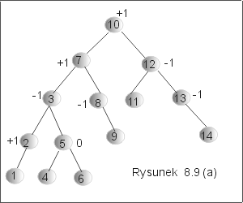
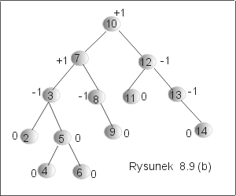
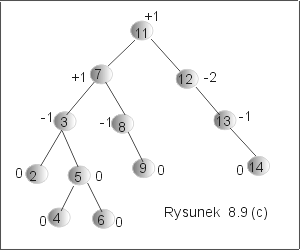
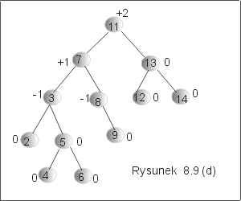
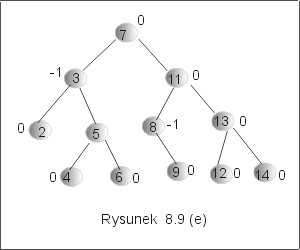

| « poprzedni punkt | nastêpny punkt » |
Zasada usuwania elementu z drzewa AVL,
delete : Et ´ AVL ® AVL,
jest prawie taka sama, jak dla drzew binarnych poszukiwañ. Jednak, podobnie jak w przypadku wstawiania elementu, wynikiem zastosowania procedury delete, opisanej dla drzew binarnych poszukiwañ, nie zawsze otrzymane drzewo jest wywa¿one. Postêpowania bêdzie wiêc nieco bardziej skomplikowana ni¿ dla drzew BST.
Metoda
Zauwa¿my, ¿e faktycznie usuwany wierzcho³ek, o którym mowa w punkcie 3 opisanej metody, nie zawsze jest tym wierzcho³kiem, którego etykietê usuwamy (por. algorytm delete dla BST, przypadek, gdy wierzcho³ek z usuwan± etykiet± ma dwa nastêpniki).
Przyk³ad 4.1
Rozwa¿my przyk³ad przedstawiony na rysunku 8.9(a). Usuniêcie etykiety 1 spowoduje odwi±zanie wêz³a z t± etykiet±, bo jest on li¶ciem w tym drzewie. Wynikiem usuniêcia 1 jest drzewo przedstawione na rysunku 8.9(b). Poza wierzcho³kiem z etykiet± 2, nie zmieni³y siê ¿adne dowi±zania, ani wagi wierzcho³ków.
|  |  |
Je¶li teraz usuniemy z drzewa (rysunek 8.9(b)) etykietê korzenia, to sytuacja jest du¿o bardziej skomplikowana. Przede wszystkim nie usuwamy bezpo¶rednio wierzcho³ka z etykiet± 10, ale jego bezpo¶redni nastêpnik (tzn. najmniejszy element w jego prawym poddrzewie), wierzcho³ek z etykiet± 11. Etykieta 11 znajdzie siê teraz w korzeniu drzewa wynikowego. Otrzymane drzewo jest drzewem binarnych poszukiwañ, nie jest jednak drzewem AVL (por. rysunek 8.9(d)).
|  |  |
Zgodnie z punktem 3 opisanej metody modyfikujemy wagi (o ile to potrzebne) wierzcho³ków cofaj±c siê wzd³u¿ ¶cie¿ki poszukiwañ. Poniewa¿ wierzcho³ek z etykiet± 12, który obejrzymy jako pierwszy, ma teraz wagê -2, nale¿y wykonaæ rotacjê prost± w lewo. Wynik tej rotacji jest przedstawiony na rysunku 8.9 (d). Jednak otrzymane drzewo binarnych poszukiwañ nie jest wywa¿one, o czym siê przekonamy wyliczaj±c wagê korzenia drzewa: rotacja spowodowa³a zmniejszenie wysoko¶ci prawego poddrzewa, które ju¿ wcze¶niej mia³o mniejsz± wysoko¶æ. Zgodnie z punktem 4 musimy kontynuowaæ wykonywanie rotacji, tym razem wzglêdem korzenia drzewa (wierzcho³ek z etykiet± 11). Wynik rotacji jest przedstawiony na rysunku 8.9 (e). J
|  |
Zwróæmy jeszcze raz uwagê na istotn± ró¿nice w procesie wywa¿ania drzewa dla operacji insert i dla operacji delete. O ile w przypadku wstawiania nowego elementu, zawsze wystarczy co najwy¿ej jedna rotacja, to nie jest tak w przypadku usuwania. Usuniêcie etykiety 10, w przyk³adzie 4.1, zmusi³o nas do wykonania dwóch rotacji. A jak jest w przypadku ogólnym? Jaka mo¿e byæ liczba niezbêdnych rotacji, je¶li drzewo ma n elementów?
Rozwa¿my drzewo D1 = <LD1,B,PD1> i niech waga wierzcho³ka B wynosi -1, tzn. prawe poddrzewo, oznaczone tu przez PD1, jest wy¿sze ni¿ lewe poddrzewo. Za³ó¿my teraz, ¿e usuniêcie jakiego¶ elementu x spowodowa³o zmniejszenie wysoko¶ci poddrzewa LD1. Zatem, dla odzyskania równowagi, konieczna bêdzie rotacja w lewo (prosta lub podwójna) wzglêdem korzenia B. Wykonanie tej rotacji mo¿e spowodowaæ zmniejszenie siê wysoko¶ci drzewa D1. Niech teraz D1, bêdzie prawym poddrzewem pewnego drzewa D2 = <LD2,A,D1> o korzeniu A i lewym poddrzewie LD2, którego wysoko¶æ by³a o jeden wiêksza ni¿ wysoko¶æ drzewa D1. Wynika st±d, ¿e waga w wierzcho³ku A zmieni³a siê z +1 na +2. Wymagana jest wiêc rotacja wzglêdem wierzcho³ka A. Ta rotacja mog³a zmniejszyæ wysoko¶æ drzewa D2. Kontynuuj±c, mo¿emy sobie wyobraziæ, ¿e drzewo D2 jest lewym poddrzewem pewnego drzewa D3 = <D2, C, PD3>, którego prawe poddrzewo PD3 by³o na pocz±tku o 1 wy¿sze ni¿ drzewo D2. W wyniku zmiany wysoko¶ci w obrêbie drzewa D2, waga w korzeniu drzewa D3 zmieni siê z -1 na -2, a wiêc konieczna bêdzie rotacja wzglêdem tego wierzcho³ka, itd. Z tych rozwa¿añ wynika, ¿e w najgorszym przypadku jedno usuniêcie etykiety mo¿e spowodowaæ "lawinê" kolejnych rotacji dla wszystkich wierzcho³ków wzd³u¿ jednej ¶cie¿ki, od usuniêtego wierzcho³ka do korzenia. Liczba rotacji mo¿e wiêc byæ oszacowana przez O(lgn), dla drzewa o n wierzcho³kach.
Pytanie 4: Co bêdzie etykiet± korzenia drzewa AVL, je¶li zosta³o ono
utworzone przez kolejne wstawianie, do pocz±tkowo pustego drzewa, elementów
1,2,3,4,5,6,7,8,9,0, a nastêpnie usuniêcie etykiety, która znalaz³a siê w
korzeniu drzewa?
| « poprzedni punkt | nastêpny punkt » |